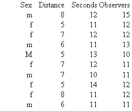

Psych 241
David Allbritton
Homework 4: Data Description and Comparing Proportions
50 points
In this assignment you will create tables and graphs for a set of hypothetical (fake) data. The methods you use will be similar to those demonstrated in class. You will also use SPSS to compare proportions, as we did in Lab 3.

Create a "coding guide" for the above data summary sheet for these 10 "subjects" using the information from the following columns. Pretend that the data is from an experiment on bystander intervention in which the researchers wanted to see how long it took a participant to get up to help someone who had fallen down (the "victim") depending on how many observers were present and how far away the victim was. The variables we will pretend these columns correspond to are given in parenthesis.
Sex
Distance (distance in feet between the participant and the victim)
Seconds (number of seconds before the participant got up to help)
Observers
(number of observers present)
Identify the dependent variable and independent variable(s).
Draw a histogram for the dependent variable scores (all 10 of them).
Draw a scattergram using (seconds) and (observers) as the variables. If one of them is the DV, use the appropriate (customary) axis for that variable.
Create a table that includes "sex", "distance in feet between the participant and the victim", and the DV. You can calculate the means for this table by hand, or use Excel or SPSS to do so.
Draw
a graph to display the data from the table you created. Be sure to
label everything appropriately.
Comparing Proportions with
Chi-square
Twenty
math majors and thirty psychology majors were asked whether they
plan to go to graduate school after college. Ten of the math majors
said yes, and nine of the psychology majors said yes. Create a data
file in SPSS to analyze this data using Chi-square, to determine
whether there is any difference between the proportion of psychology
majors planning on graduate school and the proportion of math majors
planning on graduate school. Use the output of your analysis to
answer the following questions.
What proportion of the students in the sample who plan to go to graduate school are math majors?
What is the value of chi-square?
What is the p value?
What is the null hypothesis?
What is the research hypothesis?
What is the independent variable?
What is the dependent variable?
State the results of the analysis in a sentence or two, including the appropriate format for presenting the results of a chi-square analysis.